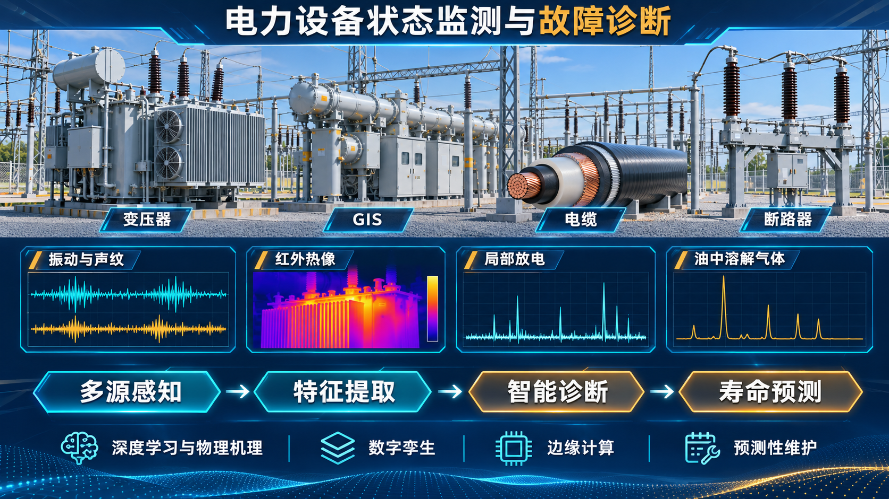
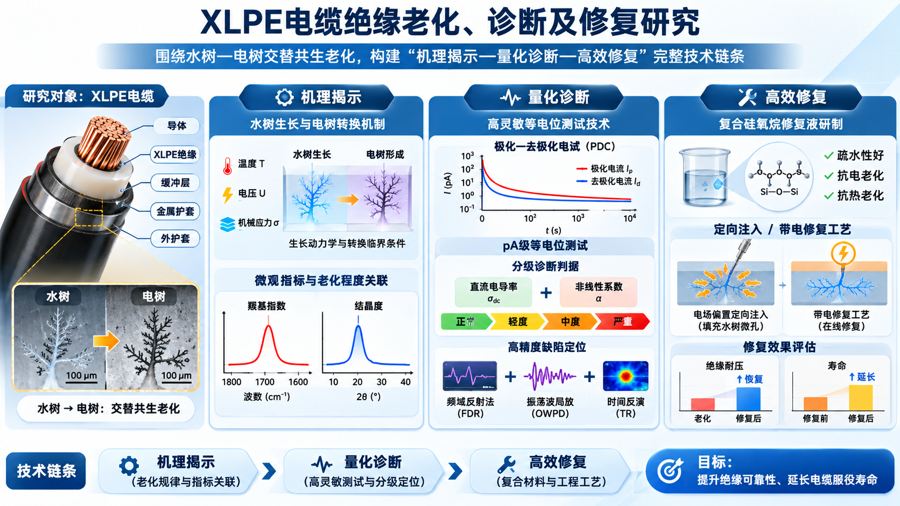
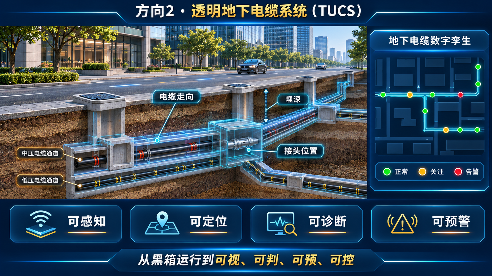

HV Lab
HV LabResearch
---Research Direction---
方向1. 高压电缆状态监测与故障诊断
针对高压电缆方向，研究应聚焦XLPE绝缘水树—电树共生老化这一核心劣化形式，贯通“机理揭示—量化诊断—高效修复”技术链条。机理层面，在温度、电压、机械应力多因素耦合下揭示水树生长动力学及其向电树转换的临界条件，建立老化程度与羰基指数、结晶度等微观指标的对应关系。诊断层面，针对传统介损测试对早期水树老化灵敏度不足的问题，发展基于极化—去极化电流的pA级等电位测试技术，以直流电导率与非线性系数为判据实现分级诊断，并利用频域反射法结合振荡波局放定位与时间反演算法提升缺陷定位精度。修复层面，研制兼具疏水性与电—热老化抗性的复合硅氧烷修复液，优化电场偏置定向注入与带电修复工艺以填充水树微孔，以耐压恢复水平、微观填充率、疏水角恢复率及加速老化寿命延长倍率多维评估修复效能。三个层面间设置跨层校验接口，使机理阈值标定诊断判据、诊断分级指导修复参数选择、修复效能反馈修正老化速率常数，形成闭环技术链条。

方向2. 高压电缆绝缘老化、诊断及修复
本方向以XLPE电缆水树—电树交替共生老化为核心对象，贯通"机理揭示—量化诊断—高效修复"技术链条：机理层面在温度、电压、机械应力多因素耦合下建立水树—电树双向转换的临界电场—水分—温度相图，并结合羰基指数、结晶度及太赫兹介电虚部等微观指标建立老化程度对应关系；诊断层面针对传统介损测试灵敏度不足，发展基于重复PDC测量的pA级等电位测试技术，以直流电导率与介损因子的变异系数作为水树老化特异性判据，并利用频域反射法结合振荡波局放定位与时间反演色散补偿提升缺陷定位精度；修复层面研制兼具疏水性与电—热老化抗性的复合硅氧烷修复液，优化电场偏置定向注入与带电修复工艺参数以填充水树微孔，并以耐压恢复水平、微观填充率、疏水角恢复率及加速老化寿命延长倍率多维评估修复效能，同时在三个层面间设置跨层验证环节，使机理阈值标定诊断判据、诊断分级指导修复参数选择，最终形成闭环校验的完整技术链条。

方向3. 高压电缆逸出气体(EGA)状态诊断
高压电缆逸出气体分析（Evolved Gas Analysis, EGA）状态诊断研究方向，面向高压电缆绝缘状态感知与异常溯源需求，围绕逸出气体分析开展基础机理与诊断方法研究。2019年首次发现缓冲层腐蚀产生的气体可在电缆内累积，验证了气体与绝缘状态之间存在强关联；2022年率先提出基于EGA的电缆状态诊断新方法，以H₂、C₂H₆、C₂H₂等小分子气体为主要分析对象；2023年进一步提出结合特异性逸出气体（如挥发性有机物VOCs）进行状态诊断的新思路，逐步形成从“小分子气体”到“特异性气体”的多层次气体表征路线。在此基础上，针对受潮腐蚀、材料热降解与放电等过程产气特征相互重叠、单一气体浓度难以判别异常来源的核心难题，基于现场测试记录采用梯度提升决策树（GBDT）分析各气体浓度及浓度比对状态分类的贡献度，并结合产气机理构建氢气浓度域（C域）、热产气组成域（T域）与放电相关信号域（D域）的三域特征体系，联合分析七种逸出气体输出三域编码、综合警示等级及具体触发条件，实现异常来源的多维表征与可解释判别；复算表明相同警示等级可对应不同的气体特征与触发条件，三域指纹通过保留这些差异，为电缆状态评估、现场复测与专项检查提供可追溯、可复核的依据，并为差异化运维策略的制定提供数据支撑。

方向4. 透明地下电缆系统(TUCS)
透明地下电缆系统（Transparent Underground Cable System，TUCS）是由我们团队率先提出的新一代地下电缆全息感知体系。该系统面向地下中低压电缆网络长期存在的“看不见、摸不着、难定位、难评估”等突出问题，融合多源感知、数字建模、智能诊断与风险预警等技术手段，将传统意义上运行状态不透明、故障定位困难、健康评估滞后的地下电缆网络，转化为可感知、可定位、可诊断、可预警的“透明化”数字资产，推动地下电缆运维模式由被动响应向主动感知、由经验判断向数据驱动、由事后处置向事前预防转变。 总体目标是实现地下电缆从“黑箱运行”向“可视、可判、可预、可控”的根本性转变：即运行状态可视、故障隐患可判、风险趋势可预、运维处置可控，全面提升地下电缆网络的全息感知能力、精准诊断能力、风险预警能力和智能管控水平，为地下电缆安全、可靠、高效运行提供系统性技术支撑。
